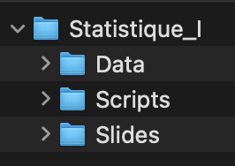
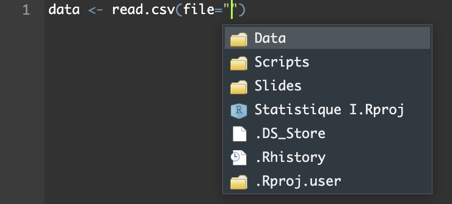
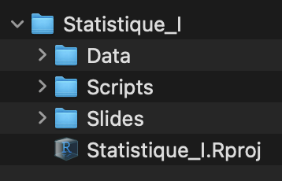

Chapter 2 Installation et environnement R et Rstudio
2.1 Présentation des logiciels
R est un langage de programmation adapté au traitement de données et à l’analyse statistique.
Pour programmer en langage R, il est nécessaire d’installer deux outils essentiels:
- Le logiciel R permet de traduire du texte sous forme de code R en binaire qui est le langage interne du processeur de l’ordinateur.
- Le logiciel RStudio permet de faciliter l’utilisation du logiciel R en donnant l’accès à une interface utilisateur.
Il est possible de faire une analogie avec une voiture. Le logiciel R est le moteur et RStudio est le tableau de bord. Sans le tableau de bord, il n’est pas possible de controler le moteur.
2.2 Installation
- Installer R sur le site de R.
- Choisir et télécharger la version de R selon votre système d’exploitation.
- Pour windows : https://cran.r-project.org/bin/windows/base/
- Pour MAC : https://cran.r-project.org/bin/macosx/
- Pour Linux : https://cran.r-project.org/index.html
- Installer le logiciel R sur votre ordinateur en exécutant le fichier téléchargé.
- Choisir et télécharger la version de R selon votre système d’exploitation.
- Installer RStudio sur le site suivant: https://posit.co/download/rstudio-desktop/
Après avoir installé ces deux logiciels, vous aurez accès à deux nouvelles applications. Cependant, nous utiliserons uniquement RStudio pour programmer. Lorsque vous exécuterez votre code écrit sur RStudio, ce dernier fera automatiquement appel à R pour exécuter les codes.
2.3 Organiser ses fichiers
Afin de gérer vos scripts et vos bases de données, nous vous proposons d’organiser vos fichiers au sein de dossiers étiquetés.
Vous pourriez par exemple créer un dossier “Statistique_I” et soit y placer tous vos fichiers (jeux de données, scripts) dont vous avez besoin pour le cours, ou faire des sous-dossier pour chaque thème. Vous pourriez, par exemple, suivre la structure suivante :

Attention, si vous manquez d’assiduité dans votre organisation, vous allez multiplier les possibilités de mauvaises manipulations.
2.4 Répertoire de travail
Lorsque vous travaillez dans R studio, le logiciel a besoin de savoir quel est votre répertoire de travail (ou working directory en anglais). Si vous ne le spécifiez pas vous-même, R studio va simplement en choisir un par défaut.
Afin de connaître le répertoire de travail actuel, vous pouvez utiliser la fonction getwd( )
## [1] "/Users/sarthers/Documents/assistanat/Statistique_I"Nous vous conseillons de définir vous-même le répertoire de travail à chaque fois que vous commencez de travailler dans R, par exemple, en le spécifiant au début de vote script.
Si vous avez créé un dossier pour le cours, alors vous pouvez l’utiliser comme répertoire de travail. Cela a de nombreux avantages et notamment vous permet d’accéder facilement aux bases de données.
Pour définir ce répertoire de travail, deux alternatives sont à votre disposition, l’utilisation de la commande setwd( ) ou passer par la création d’un projet R.
2.4.1 Définir son répertoire de travail avec setwd( )
La commande setwd( ) vous permet de définir le répertoire de travail. Une bonne pratique consiste à l’indiquer au début du script si vous travaillez avec un script.
A chaque fois que vous retournez sur R studio, vous devrez spécifier votre répertoire de travail.
Pour ce faire, il suffit de copier le chemin qui mène au répertoire de travail à l’intérieur des parenthèses, comme dans l’exemple ci-dessous
RAPPEL, vous pouvez obtenir le chemin d’un dossier de la manière suivante:
Pour windows : Obtain file path in windows 10
Pour MAC : Obtain file path on a Mac
Pour linux : Obtain file path in Linux command line
Une fois que vous avez indiqué votre répertoire de travail par la fonction setwd( ), si vous avez une base de données dans le répertoire de travail, vous pourrez l’accéder directement.
Exemple 1 :
# Par exemple, importer le fichier "data_ex1.csv",
# enregistré dans le répertoire de travail.
read.csv(file="data_ex1.csv")Exemple 2 :
# Par exemple, importer le fichier "data_ex1.csv",
# enregistré dans le dossier Data qui se trouve dans le répertoire de travail.
read.csv(file="Data/data_ex1.csv")Pour rappel, lorsque vous allez indiquer le chemin menant à un fichier, vous pouvez utiliser la touche ‘tab’ afin que Rstudio vous propose les différentes alternatives à votre disposition. Choisissez votre étape en cliquant dessus. La touche ‘tab’ peut être réutilisée jusqu’à ce que vous arriviez au fichier de votre choix. Cela vous permet d’éviter toute forme de fausse manipulation telle qu’une faute de frappe par exemple.

2.4.2 Projet R
A la place de préciser votre répertoire de travail par la fonction setwd( ), Rstudio vous propose une autre alternative: la creation d’un projet. La création d’un projet vous permet de générer un raccourci qui va lancer Rstudio directement depuis votre répertoire de travail choisi (p.ex, votre dossier Statistique_I). L’avantage d’ouvrir Rstudio depuis votre répertoire de travail est que cela change directement le point d’ancrage de vos chemins sans que vous ayez besoin de le spécifier par la fonction setwd( ).
Pour créer un projet, suivez les 5 étapes suivantes :
Générez un nouveau projet en suivant le chemin suivant dans votre interface RStudio: File > New project… (Fichier > Nouveau projet…)

Vous avez ensuite deux possibilités:
Créer un nouveau dossier
Par exemple, créer un nouveau dossier appelé “Statistique_I” sur votre bureau ou ailleurs.Générer le projet au sein d’un dossier préexistant
Par exemple, instaurer le projet dans votre dossier “Statistique_I”, rangé dans vos cours de première année.
L’étape suivante est de structurer votre répertoire de travail (nouveau ou existant) de la manière suivante:
Statistique_I, le nom de votre répertoire de travail choisi
Statistique_I.Rproj, votre fichier .Rproj que vous avez généré à l’étape précédente
Data, le dossier pour vos bases de données
Scripts, le dossier pour vos scripts
Slides, le dossier pour les slides du cours ou autres documents

Vous pouvez maintenant ouvrir Rstudio en double-cliquant sur votre fichier Statistique_I.Rproj.
Une fois Rstudio ouvert par ce biais, les chemins menant à vos diverses bases de données seront directs.
# Par exemple, importer le fichier "data_ex1.csv", enregistré dans le dossier Data de mon répertoire de travail. read.csv(file="Data/data_ex1.csv")Pour rappel, lorsque vous allez indiquer le chemin menant à un fichier, vous pouvez utiliser la touche ‘tab’ afin que Rstudio vous propose les différentes alternatives à votre disposition. Choisissez votre étape en cliquant dessus. La touche ‘tab’ peut être réutilisée jusqu’à ce que vous arriviez au fichier de votre choix. Cela vous permet d’éviter toute forme de fausse manipulation telle qu’une faute de frappe par exemple.
2.5 Environnement de travail
Une fois que RStudio est lancé, une interface découpée en plusieurs zones se présente. Ces parties parties peuvent être redimensionnées, masquées ou maximisées selon vos préférences.

Chacune des quatre zones a sa propre utilité:
- Cette zone est dédiée aux fichiers sources. Ce volet permet d’écrire et de sauvegarder les lignes de code. Ce sera la partie la plus utilisée lors de la programmation. Un nouveau script peut être ouvert à partir de l’onglet
Fileen haut à gauche de l’écran, puisNew FileetR Script. Chaque script peut être enregistré soit via le même onglet en choisissantSave As, soit en utilisant les raccourcis classiques de votre clavier. - Cette zone fournit des informations sur les objets, les variables et les données en mémoire sous l’onglet
Environment. - La console est affichée en bas à gauche. Cette partie permet d’entrer et d’exécuter des instructions et voir les résultats s’afficher.
- Cette zone permet de naviguer dans le répertoire de travail dans l’onglet
Files, d’afficher les graphes réalisés dans l’ongletPlots, d’afficher les extensions/packages disponibles sous l’ongletPackageset également d’afficher l’aide (qui est très complète) sous l’ongletHelp.